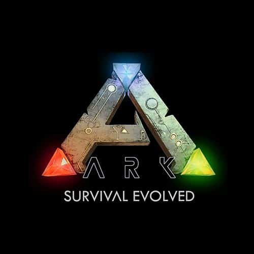
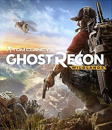
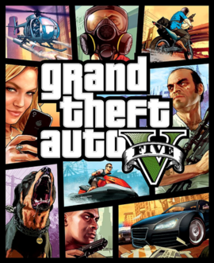

Ark: Survival Evolved é um game de ação em primeira pessoa para computadores (Windows, Mac, Linux), PS4, Xbox One, Android e iOS que coloca o jogador no sistema de sobrevivência em um mundo dominado pelos dinossauros. O título tem multiplayer e muitos elementos de competição no gameplay.
Counter-Strike: Global Offensive (CS:GO) é um jogo online desenvolvido pela Valve Corporation e pela Hidden Path Entertainment, sendo uma sequência de Counter-Strike: Source. É o quarto título principal da franquia.
Foi lançado no dia 21 de agosto de 2012 para as plataformas Windows e Mac OS X no Steam, Xbox 360 (por meio da Xbox Live Arcade).
Divinity: Original Sin II é um jogo desenvolvido e publicado pela Larian Studios. A sequela de 2014 Divinity: Original Sin, foi lançado para o Microsoft Windows em setembro de 2017 e será lançado para PlayStation 4 e Xbox One em agosto de 2018. O jogo recebeu aclamação universal, com muitos críticos elogiando sua complexidade e interatividade, para ser um dos melhores jogos de RPG de todos os tempos. Foi também um sucesso comercial, vendendo mais de um milhão de cópias em dois meses.
Dota 2 é um jogo eletrônico do gênero Action Real-Time Strategy (abreviado como ARTS) ou também considerado do gênero Multiplayer Online Battle Arena (abreviado como MOBA), foi desenvolvido pela Valve Corporation como sequência do Defense of the Ancients (DotA), uma modificação (mod) em um mapa desenvolvido para Warcraft III: The Frozen Throne.O jogo é baseado em partidas on e off-line, em cada uma delas o objetivo é derrotar a equipe adversária e, para isso, é, indispensavelmente, necessário destruir o Ancestral (Ancient), que, por sua vez, se localiza no centro da base inimiga.

Ghost Recon Wildlands de Tom Clancy é um videogame de tiro tático desenvolvido pela Ubisoft Paris e publicado pela Ubisoft. Foi lançado mundialmente em 7 de março de 2017, para o Microsoft Windows, PlayStation 4 e Xbox One, como o décimo da franquia Ghost Recon do Tom Clancy e é o primeiro jogo da série Ghost Recon a apresentar um ambiente de mundo aberto.

Grand Theft Auto V é um jogo eletrônico de ação-aventura desenvolvido pela Rockstar North e publicado pela Rockstar Games. É o sétimo título principal da série Grand Theft Auto e foi lançado originalmente em 17 de setembro de 2013 para PlayStation 3 e Xbox 360, com remasterizações lançadas em 18 de novembro de 2014 para PlayStation 4 e Xbox One, e em 14 de abril de 2015 para Microsoft Windows. O jogo se passa no estado ficcional de San Andreas, com a história da campanha um jogador seguindo três criminosos e seus esforços para realizarem assaltos sob a pressão de uma agência governamental. O mundo aberto permite que os jogadores naveguem livremente pelas áreas rurais e urbanas de San Andreas.